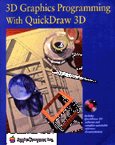

3D Graphics Programming With QuickDraw 3D
QuickDraw 3D is a graphics library developed by Apple Computer that programmers can use to create models of three-dimensional objects and render images of those models on the screen, a printer, or other output device. The QuickDraw 3D programming interface, which is cross platform, is based on the C programming language.This book explains how to
- define 3D models and apply attributes to those models
- create images of 3D models from various camera angles
- use the 3D Viewer without using the low-level APIs
- allow a user to interact with the objects in a 3D model
Availability: Click below to obtain 3D Graphics Programming with QuickDraw 3D in any of the following formats.

Printed 
HTML (2.5 MB) 
Acrobat (6.7 MB) 
QuickView (4 MB)
Book Contents
- Figures, Tables, and Listings
- Preface - About This Book
- Chapter 1 - Introduction to QuickDraw 3D
- Chapter 2 - 3D Viewer
- Chapter 3 - QuickDraw 3D Objects
- Chapter 4 - Geometric Objects
- Chapter 5 - Attribute Objects
- Chapter 6 - Style Objects
- Chapter 7 - Transform Objects
- Chapter 8 - Light Objects
- Chapter 9 - Camera Objects
- Chapter 10 - Group Objects
- Chapter 11 - Renderer Objects
- Chapter 12 - Draw Context Objects
- Chapter 13 - View Objects
- Chapter 14 - Shader Objects
- Chapter 15 - Pick Objects
- Chapter 16 - Storage Objects
- Chapter 17 - File Objects
- Chapter 18 - QuickDraw 3D Pointing Device Manager
- Chapter 19 - Error Manager
- Chapter 20 - QuickDraw 3D Mathematical Utilities
- Chapter 21 - QuickDraw 3D Color Utilities
- Bibliography
- Glossary